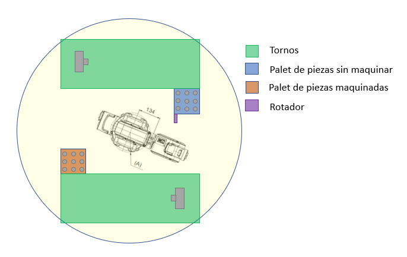
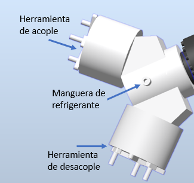
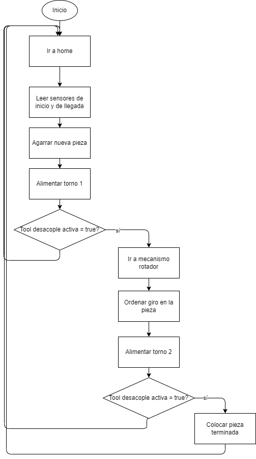

Los componentes que conforman la celda robotizada son el robot, los tornos, los palets y la garra giratoria. Muy en sintonía con la aplicación del video de referencia, se colocaron los componentes de la forma que indica la figura.
Layout
Disposición de los componentes

Lógica
Definición de los TCPs de la herramienta
La herramienta tiene tres TCPs: dos de agarre y uno para expulsar refrigerante. Resultó necesario darles nombres a estos TCPs, particularmente a los dos de agarre con el objetivo de diferenciarlos y saber cuándo y por qué direccionar a determinado objetivo un TCP u otro. De esa manera, se definieron los TCP como se muestra. La herramienta de acople corresponde a aquella que toma las piezas para colocarlas en tornos, mientras que la herramienta de desacople retira las piezas de los tornos una vez fueron maquinadas.

Lógica
Variables clave para el proceso
Las variables clave cumplen con el objetivo de permitir las comunicaciones entre la estación y el controlador del robot; comunicaciones que son necesarias para que el robot tome decisiones de las subrutinas que debe realizar.
Herramienta de acople activa
Herramienta de desacople activa
Torno 1 tiene pieza
Torno 2 tiene pieza
Lógica
Diagrama de flujo

Smart Components
Los Smart Components de torno se encargaron de fijar las piezas cuando el robot las colocaba en su posición y de transmitirle al robot la información de si hay alguna pieza montada en ellos
Los sensores de inicio le transmitían al robot las señales para deducir la próxima pieza que correspondía tomar.
Los sensores de llegada le indicaban al robot el espacio disponible al que debía ir para soltar la pieza terminada
El eje externo de rotación tenía la función de rotar el mecanismo de garra giratoria cuando se colocara la pieza en él